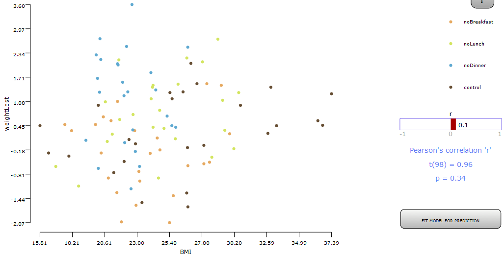

Pearson's correlation coefficient is used to find correlation (the direction of change in one variable as the other variable changes) between two ratio variables. It has a range of -1 to +1. -1 implies that one variable decreases as the other increases (negative correlation) and +1 implies one variable increases as the other increases (positive correlation). 0 implies there is no dependence between the two variables.
Conditions:
- Two variables measured in interval or ratio scale
- There should be a linear relationship between the variables
- No significant outliners
- Variables are approximately normally distributed.
Examples:
Example 1: Does skipping a meal lead to weight loss? If so, does it vary for different meals? In this experiment, we compare the weight lost by participants under four different conditions: skip breakfast, skip lunch, skip dinner, and control. We measured the amount of weight lost (positive value means that weight was lost) and the absolute BMI after 3 months. The experiment follows a between-group design. Following the experiment, we also get the satisfaction rating from the participant. The amount of exercise of the participant is also considered as an independent variable. Here we plot data of weight loss against BMI both either interval or ratio scale measurements.

Example 2: The following is an example of mathematical notation, written in LaTeX and rendered by SVG via mathjax library $a \ne 0$